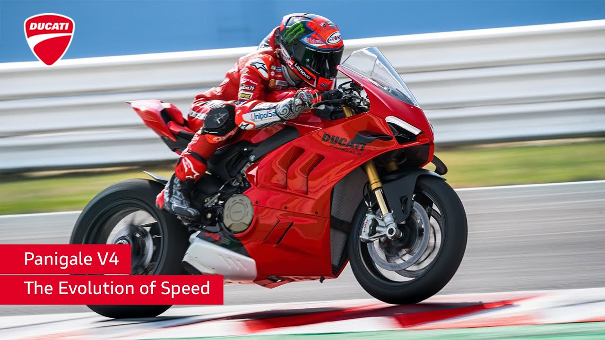

Ducati Panigale V4
La Ducati Panigale V4 es una obra maestra de la ingeniería italiana. Con un motor V4 de 1103 cc, esta moto ofrece una potencia descomunal y una estética impresionante. La Panigale V4 también cuenta con una serie de ayudas electrónicas que mejoran la seguridad y el rendimiento.

1. Historia y Evolución
La BMW S1000RR es una motocicleta deportiva de alto rendimiento que debutó en 2009. Fue desarrollada originalmente para competir en el Campeonato Mundial de Superbike (WSBK), y rápidamente se convirtió en un referente en el mercado de motocicletas deportivas por su tecnología avanzada y rendimiento superior.
- 2009-2011: Primera generación, introducción con un motor de cuatro cilindros en línea de 999 cc, destacada por su potencia y tecnología innovadora.
- 2012-2014: Segunda generación, mejoras en la electrónica y ergonomía, incluyendo modos de conducción ajustables.
- 2015-2018: Tercera generación, con aumento de potencia y refinamiento de la electrónica, incluyendo un sistema de suspensión semi-activa.
- 2019-presente: Última generación, con un rediseño completo, motor más ligero y potente, y avances en la aerodinámica y tecnología.
2. Especificaciones Técnicas
La BMW S1000RR está diseñada para ofrecer un rendimiento excepcional tanto en la carretera como en la pista. Aquí están las especificaciones técnicas más recientes:
- Motor: 999 cc, cuatro cilindros en línea, DOHC, 16 válvulas, refrigerado por líquido.
- Potencia: Aproximadamente 205 CV a 13,500 RPM.
- Par Máximo: 113 Nm a 11,000 RPM.
- Transmisión: Caja de cambios de 6 velocidades con Quick Shifter.
- Chasis: Twin-spar de aluminio.
- Suspensión Delantera: Horquilla telescópica invertida, completamente ajustable.
- Suspensión Trasera: Amortiguador con ajuste de precarga y rebote.
- Frenos: Discos dobles delanteros de 320 mm con pinzas de 4 pistones y un disco trasero de 220 mm.
- Peso: Aproximadamente 197 kg en orden de marcha.